Terrain-Adaptive Planning and Control of Complex Motions for Walking Excavators
한줄 요약 — 이 논문은 단순화 지형에서 계산한 오프라인 전신 궤적을 혼합 토크/속도 관절용 계층형 WBC로 추종해 12톤 보행 굴착기의 모든 자유도를 이동에 사용했으며, 약 1초 주행계획과 10–15초 보행계획으로 요철 적응·crab 주행·30° 회전을 보였지만 동역학을 무시한 저속 계획과 고가 밸브 retrofit에 묶여 있다.
1.연구 배경 및 동기
바퀴와 다리, 팔을 함께 쓰는 12톤 보행 굴착기의 강건한 전신 이동
보행 굴착기는 네 바퀴 다리와 대형 작업 팔을 함께 갖춰 평지에서는 주행하고 단차·진흙에서는 다리를 움직일 수 있다. 그러나 무릎이 없는 특수 기구학, 31자유도, 비홀로노믹 바퀴 구름, 유압 지연과 마찰 때문에 소형 wheeled-legged 로봇의 짧은 horizon 온라인 최적화나 순수 반응형 제어를 그대로 옮기기 어렵다. 실제 현장 지형도 vegetation·mud·센서 discretization 탓에 정확한 mesh를 계획기에 넣을 수 없다.
논문은 이 불일치를 오프라인 trajectory optimization과 온라인 terrain-adaptive whole-body control의 역할 분담으로 해결한다. 계획기는 단순화된 지형에서 차체·접촉 발·swing limb·관절·접촉 schedule의 전체 참조를 만들고, 제어기는 보지 못한 요철에서 높은 우선순위 차체 자세와 접촉 제약을 보존하도록 낮은 우선순위 발 높이·관절 추종을 양보한다.
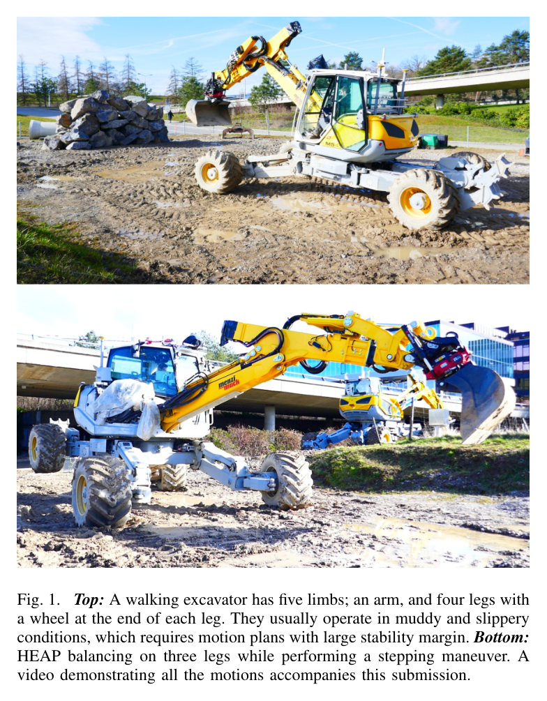
원문 Figure 1 · PDF p.1 — Fig. 1. Top: A walking excavator has five limbs; an arm, and four legs with a wheel at the end of each leg. They usually operate in muddy and slippery conditions, which requires motion plans with large stability margin. Bottom: HEAP balancing on three legs while performing a stepping maneuver. A video demonstrating all the motions accompanies this submission.
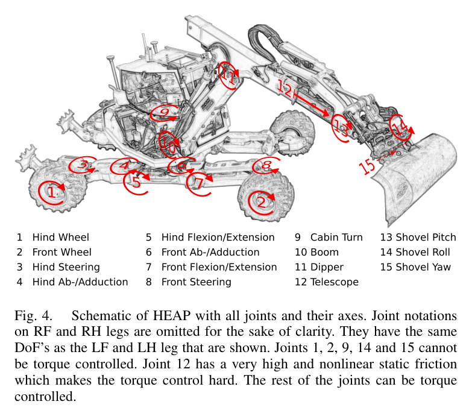
원문 Figure 4 · PDF p.4 — Fig. 4. Schematic of HEAP with all joints and their axes. Joint notations on RF and RH legs are omitted for the sake of clarity. They have the same DoF’s as the LF and LH leg that are shown. Joints 1, 2, 9, 14 and 15 cannot be torque controlled. Joint 12 has a very high and nonlinear static friction which makes the torque control hard. The rest of the joints can be torque controlled.
선행 연구의 한계
기존 wheeled-legged trajectory optimization은 소형 로봇과 0.85–2초 horizon, 시뮬레이션 또는 비교적 정돈된 환경에 집중했다.
Momaro·Centauro 계열은 지도를 보고 driving과 stepping을 고르지만 전신 동작계획 없이 전환을 수작업 규칙으로 구성했다.
전신제어 연구는 모든 관절이 정확한 torque actuator라는 가정을 흔히 쓰며, 유압 마찰·지연과 혼합 position/torque 관절을 가진 대형 장비에 맞지 않는다.
정확한 terrain map을 계획에 강제하면 진흙·식생·discretization 때문에 NLP가 어려워지고 지도 오차가 곧 실행 실패로 이어진다.
이 연구의 기여
기존 walking-excavator collocation planner에 차체 자세·말단 속도 제약, nominal terminal cost, 좌우 wheel speed 차 비용을 추가해 실차 실행성을 높였다.
접촉·비접촉 limb와 torque·position/velocity joint를 하나의 계층형 whole-body control 구조에서 조정하는 혼합 제어기를 제안했다.
낮은 우선순위 발·관절 추종을 희생해 미계획 지형 변화에서도 차체 높이·roll·pitch를 지키는 perception-less terrain adaptation을 구현했다.
12톤 31자유도 HEAP에서 모든 자유도를 이동에 활용한 주행·측면 stepping·30° 제자리 회전을 동일 planner/controller로 실증했다.
2.방법론 및 시스템 구성
planner는 direct collocation 기반 nonlinear program으로 base, contact end-effector, swing end-effector, 관절 궤적과 contact schedule을 계산한다. 바퀴 lateral slip을 금지하는 rolling constraint와 기구학 일관성을 유지하면서, roll·각속도·말단속도 제한, 안정 nominal posture terminal cost, 한 유압회로에 묶인 좌우 wheel의 속도 차 비용을 더한다. IPOPT/Ifopt로 노트북에서 오프라인 해결한다.
실행 시 100 Hz hierarchical optimization WBC가 generalized acceleration과 접촉력을 연속 QP 우선순위로 계산한다. 1순위 운동방정식·관절한계·마찰원뿔·바퀴 구름, 2순위 차체 roll/pitch·높이, 3순위 yaw·수평이동과 contact leg, 4순위 swing limb, 5순위 가속도·내부힘 최소화를 적용한다. 이 우선순위가 지형 오차에서 base 안정성을 발 위치보다 먼저 보존한다.
처리 파이프라인
1
임무 자세와 접촉 schedule 입력
목표 base pose와 stepping 순서 또는 driving 조건을 정한다. planner는 base, 접촉 limb, swing limb의 궤적과 관절 참조를 동일 NLP 변수로 구성한다.
2
실차 실행성 비용·제약 추가
base roll·각속도와 end-effector 속도를 제한하고, 끝 자세를 안정한 nominal joint configuration으로 유도한다. 같은 회로의 전후 좌우 wheel speed magnitude 차를 줄여 slip과 tracking 부담을 낮춘다.
3
오프라인 collocation 최적화
IPOPT가 기구학·접촉·rolling constraint를 만족하는 전체 motion을 계산한다. 결과는 contact joint trajectory, base trajectory, contact/swing end-effector reference, contact schedule로 분리돼 controller에 전달된다.
4
계층형 inverse-dynamics WBC
100 Hz에서 운동방정식과 안전한 joint·contact constraint를 최우선으로 풀고, 차체 안정, 평면 이동, limb 추종, 가속도·contact force 최소화를 순차 QP의 nullspace에서 최적화한다.
5
혼합 actuator 명령 분배
torque-controllable contact limb에는 WBC와 impedance torque를 보내고, position/velocity limb에는 IK 속도를 보낸다. wheel은 계획 속도 feedforward와 rolling-direction position error를 이용한 별도 PI loop로 valve를 구동한다.
직접 속도 측정 없이 계획 feedforward와 wheel rolling 방향의 위치오차 PI 보정을 합쳐 저수준 valve current 참조를 만든다.
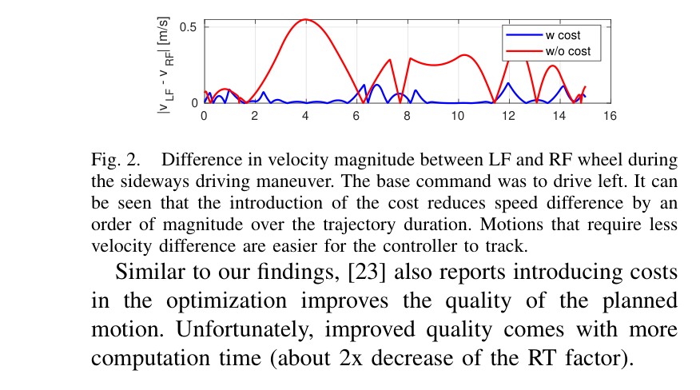
원문 Figure 2 · PDF p.3 — Fig. 2. Difference in velocity magnitude between LF and RF wheel during the sideways driving maneuver. The base command was to drive left. It can be seen that the introduction of the cost reduces speed difference by an order of magnitude over the trajectory duration. Motions that require less velocity difference are easier for the controller to track. Similar to our findings, [23] also reports introducing costs in the optimization improves the quality of the planned motion. Unfortunately, improved quality comes with more computation time (about 2x decrease of the RT factor).
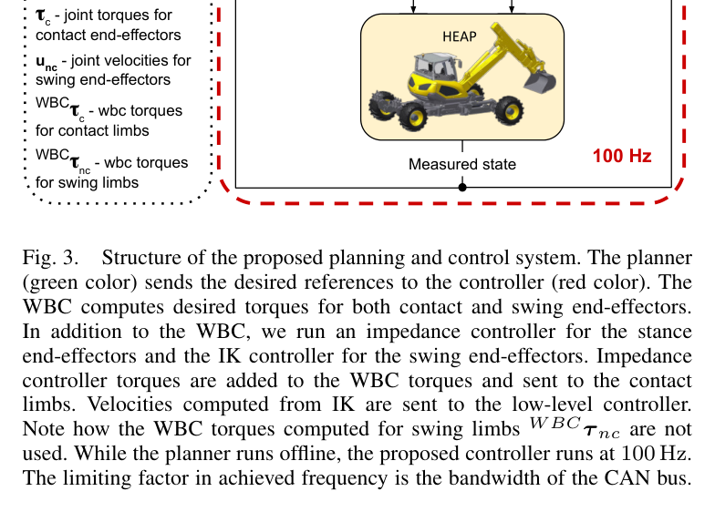
원문 Figure 3 · PDF p.3 — Fig. 3. Structure of the proposed planning and control system. The planner (green color) sends the desired references to the controller (red color). The WBC computes desired torques for both contact and swing end-effectors. In addition to the WBC, we run an impedance controller for the stance end-effectors and the IK controller for the swing end-effectors. Impedance controller torques are added to the WBC torques and sent to the contact limbs. Velocities computed from IK are sent to the low-level controller. Note how the WBC torques computed for swing limbs W BCτ nc are not used. While the planner runs offline, the proposed controller runs at 100 Hz. The limiting factor in achieved frequency is the bandwidth of the CAN bus.
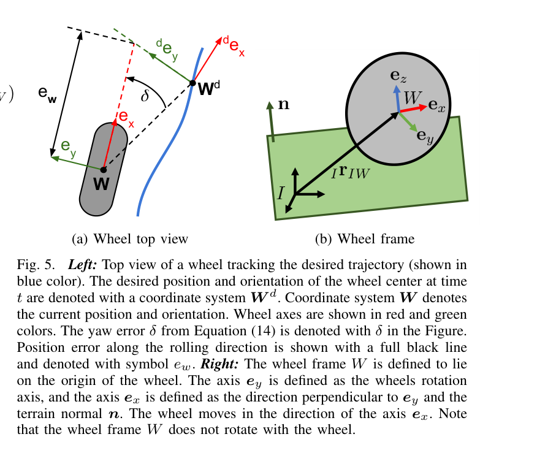
원문 Figure 5 · PDF p.5 — Fig. 5. Left: Top view of a wheel tracking the desired trajectory (shown in blue color). The desired position and orientation of the wheel center at time t are denoted with a coordinate system W d. Coordinate system W denotes the current position and orientation. Wheel axes are shown in red and green colors. The yaw error δ from Equation (14) is denoted with δ in the Figure. Position error along the rolling direction is shown with a full black line and denoted with symbol ew. Right: The wheel frame W is defined to lie on the origin of the wheel. The axis ey is defined as the wheels rotation axis, and the axis ex is defined as the direction perpendicular to ey and the terrain normal n. The wheel moves in the direction of the axis ex. Note that the wheel frame W does not rotate with the wheel.
3.핵심 기술
실차 친화적 전신 trajectory optimization
순수 기구학적으로 가능한 계획이 대형 유압기에서 실행 가능하다는 보장은 없다. 연구는 base 기울기와 limb 속도를 제한하고, 다음 동작을 시작하기 쉬운 nominal posture로 끝나게 하며, 같은 유압계에 연결된 wheel의 속도차를 줄이는 analytical cost를 넣었다.
wheel cost는 LF-RF 속도 magnitude 차를 궤적 전반에서 한 자릿수 규모가 아니라 한 order 낮췄다. 대신 nonlinear objective가 어려워져 real-time factor가 약 두 배 악화됐다. 저자들은 온라인성보다 실차 추종 품질을 택하고 계획을 순차 오프라인 단계로 분리했다.
비홀로노믹 rolling과 full-body 기구학을 collocation NLP에 포함
wheel 속도차 약 한 order 감소
비용 추가로 real-time factor 약 2배 저하
우선순위가 만드는 terrain adaptation
제어기는 별도 지형 반사 동작을 코딩하지 않는다. 운동방정식·접촉·joint safety 다음에 base height와 roll/pitch를 놓고 swing foot 및 joint pose를 더 낮게 둔다. 평지 계획이 작은 언덕을 만나면 LF foot height와 FE joint tracking을 버리는 대신 base가 수평을 유지하는 행동이 QP 계층에서 자연스럽게 나온다.
이 방식은 접촉 가능한 범위와 joint 여유 안에서 국소 지형오차를 흡수한다.
base roll/pitch·height가 swing limb보다 높은 우선순위
flat-ground plan으로 실재 작은 언덕을 통과
task conflict 때 foot height와 FE joint reference를 의도적으로 희생
torque와 velocity actuator의 공존
HEAP 차체는 12개 torque joint와 4개 position/velocity joint, 팔은 각각 4개와 3개를 가진다. WBC는 모든 limb의 동작이 base에 미치는 효과를 inverse dynamics에서 고려하지만, 실제 명령은 actuator 능력에 맞게 torque와 IK velocity로 나눈다. 이 분리는 미사용 WBC torque가 controller 사이 충돌을 일으키지 않으면서 swing 관성을 반영하게 한다.
접촉 limb에는 impedance torque를 추가해 계획보다 높거나 낮은 지면에서 수동적으로 힘을 조정한다. 대형 기존 장비의 일부 실린더만 고성능 밸브로 바꾸는 retrofit에서도 전신 조정이 가능하다는 실용적 장점이 있다.
차체 torque 12개+position/velocity 4개
팔 torque 4개+position/velocity 3개
동일 WBC가 swing 관성을 계산하되 실행 명령은 IK 속도로 대체
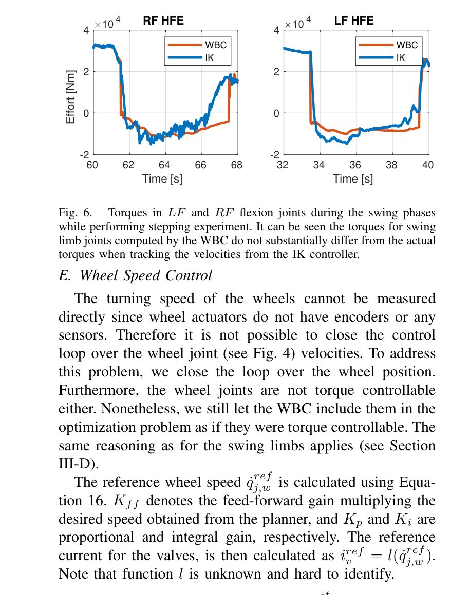
원문 Figure 6 · PDF p.6 — Fig. 6. Torques in LF and RF flexion joints during the swing phases while performing stepping experiment. It can be seen the torques for swing limb joints computed by the WBC do not substantially differ from the actual torques when tracking the velocities from the IK controller. E. Wheel Speed Control The turning speed of the wheels cannot be measured directly since wheel actuators do not have encoders or any sensors. Therefore it is not possible to close the control loop over the wheel joint (see Fig. 4) velocities. To address this problem, we close the loop over the wheel position. Furthermore, the wheel joints are not torque controllable either. Nonetheless, we still let the WBC include them in the optimization problem as if they were torque controllable. The same reasoning as for the swing limbs applies (see Section III-D). The reference wheel speed ˙qref j,w is calculated using Equa- tion 16. Kff denotes the feed-forward gain multiplying the desired speed obtained from the planner, and Kp and Ki are proportional and integral gain, respectively. The reference current for the valves, is then calculated as iref v = l( ˙qref j,w ). Note that function l is unknown and hard to identify.
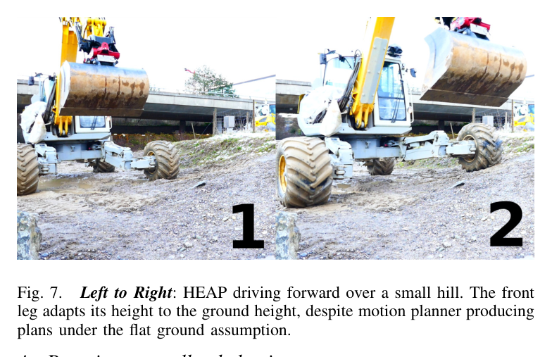
원문 Figure 7 · PDF p.6 — Fig. 7. Left to Right: HEAP driving forward over a small hill. The front leg adapts its height to the ground height, despite motion planner producing plans under the flat ground assumption.
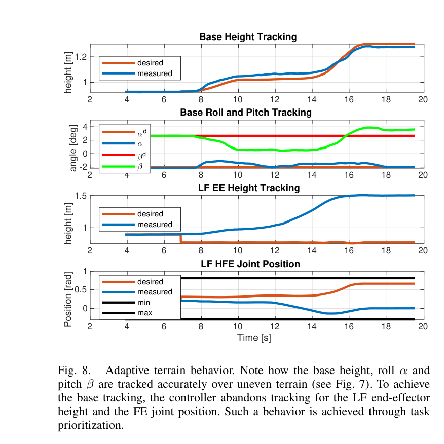
원문 Figure 8 · PDF p.7 — Fig. 8. Adaptive terrain behavior. Note how the base height, roll α and pitch β are tracked accurately over uneven terrain (see Fig. 7). To achieve the base tracking, the controller abandons tracking for the LF end-effector height and the FE joint position. Such a behavior is achieved through task prioritization.
4.실험 결과
실험 환경·장비·데이터
12톤 Menzi Muck M545 기반 HEAP, 31자유도·다섯 limb(네 wheel-leg와 arm)
차체 torque 12/position-velocity 4 joint, 팔 torque 4/position-velocity 3 joint
RTK-GNSS, 차체·캐빈 IMU를 two-state information filter로 융합
100 Hz WBC/IK/impedance 제어, CAN bus가 주기 상한, 실외 진흙·요철 환경과 안전 운전자
실험 프로토콜
wheel speed-difference cost를 켠 계획과 끈 계획에서 sideways driving 중 LF-RF wheel 속도 magnitude 차를 비교했다.
평평한 지면으로 만든 전진 계획을 실제 작은 언덕 위에서 실행해 차체 높이·roll·pitch와 LF 말단·FE joint의 우선순위 적응을 관찰했다.
base를 앞·왼쪽으로 보냈다가 시작점으로 돌아오게 하여 planner가 양방향 crab steering을 스스로 선택하는지 검증했다.
비교 기준
planner 절제: wheel velocity-difference analytical cost 사용 대 미사용
지형 모델 불일치: flat-ground 계획 참조 대 실제 small hill 실행
평가 지표
LF-RF wheel 속도 magnitude 차와 real-time factor 변화
base height·roll·pitch 및 limb/joint reference tracking 곡선
driving·stepping 계획 계산시간
달성 yaw 회전각, 측면 step 거리, full-body contact sequence 완수
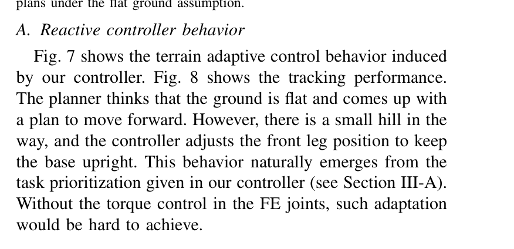
원문 Figure 7 · PDF p.6 — Fig. 7 shows the terrain adaptive control behavior induced by our controller. Fig. 8 shows the tracking performance. The planner thinks that the ground is flat and comes up with a plan to move forward. However, there is a small hill in the way, and the controller adjusts the front leg position to keep the base upright. This behavior naturally emerges from the task prioritization given in our controller (see Section III-A). Without the torque control in the FE joints, such adaptation would be hard to achieve.
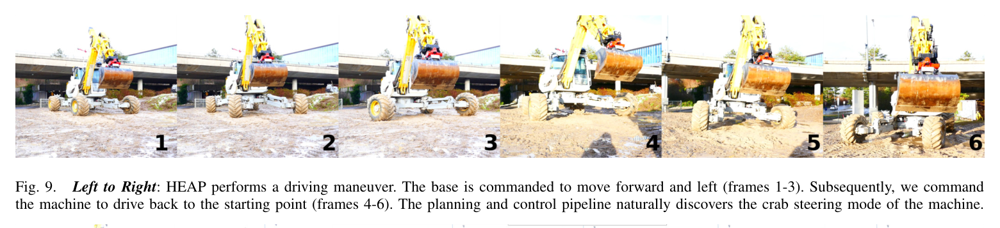
원문 Figure 9 · PDF p.8 — Fig. 9. Left to Right: HEAP performs a driving maneuver. The base is commanded to move forward and left (frames 1-3). Subsequently, we command the machine to drive back to the starting point (frames 4-6). The planning and control pipeline naturally discovers the crab steering mode of the machine.
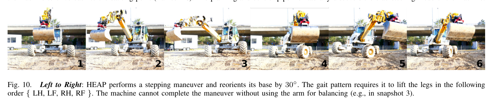
원문 Figure 10 · PDF p.8 — Fig. 10. Left to Right: HEAP performs a stepping maneuver and reorients its base by 30◦. The gait pattern requires it to lift the legs in the following order { LH, LF, RH, RF }. The machine cannot complete the maneuver without using the arm for balancing (e.g., in snapshot 3).
핵심 결과 해석
지형 적응 실험에서는 planner가 평지를 가정했음에도 실제 작은 언덕을 넘어갈 때 차체 높이·roll·pitch를 유지했다. Fig. 8의 곡선은 LF 말단 높이와 FE joint 위치가 desired에서 벗어나는 동안 base reference가 우선 추종되는 것을 보인다. 정량 RMS는 제시하지 않았지만, 이 의도적인 과제 양보가 torque-controlled FE joint 없이는 어렵다는 실차 증거를 제공한다.
stepping plan은 약 10–15초가 걸렸다. HEAP는 LH→LF→RH→RF 순으로 다리를 들어 팔을 swing limb 반대쪽 counterweight로 쓰고 base CoM을 지지영역 안에 옮기며 yaw 30°를 완성했다. 별도 궤적에서는 측면으로 0.5 m씩 두 번 stepping했다. 저자들은 이것을 대형 walking excavator가 모든 자유도를 locomotion에 사용해 전신 동작을 실행한 최초 사례로 제시한다.
정량 결과
평가 항목
정량 결과
조건·맥락
원문 근거
wheel 속도차 감소
약 1 order
LF-RF sideways driving, analytical cost 사용 대 미사용
PDF p.3
계산량 대가
real-time factor 약 2배 감소
wheel 속도차 비용 추가
PDF p.3
제어 주기
100 Hz
WBC·IK·impedance 구조, CAN bus가 제한요인
PDF p.3
주행 계획시간
약 1 s
앞·좌측 이동과 복귀 crab steering
PDF p.7
stepping 계획시간
약 10–15 s
전신 yaw 회전 maneuver
PDF p.7
제자리 회전
yaw 30°
LH→LF→RH→RF contact sequence와 arm counterweight
PDF p.7
측면 stepping
0.5 m × 2회
Fig. 11b tracking experiment
PDF p.8
실차 actuator 구성
차체 12 torque+4 velocity, 팔 4 torque+3 velocity
혼합 제어 joint 집합
PDF p.6
실패 사례와 경계조건
wheel 속도차를 줄인 계획은 계산 품질은 좋아졌지만 real-time factor가 약 절반으로 떨어져 온라인 replanning에 불리했다.
wheel encoder가 없어 실제 회전속도 feedback을 닫지 못하고, 알기 어려운 valve current mapping과 position proxy에 의존했다.
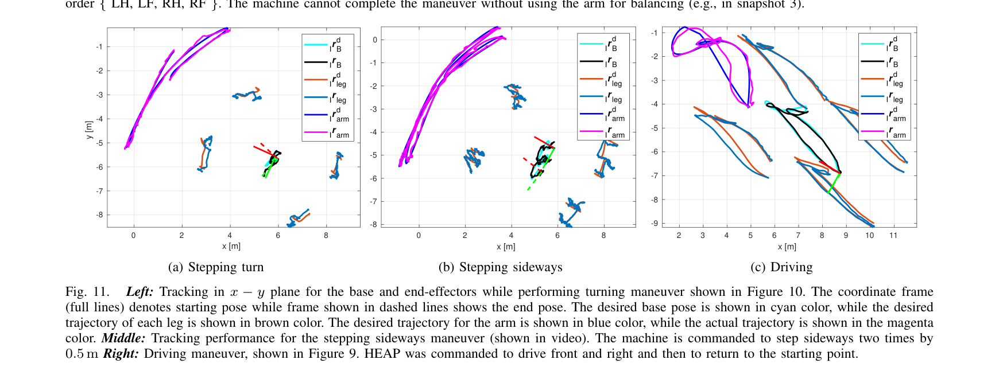
원문 Figure 11 · PDF p.8 — Fig. 11. Left: Tracking in x −y plane for the base and end-effectors while performing turning maneuver shown in Figure 10. The coordinate frame (full lines) denotes starting pose while frame shown in dashed lines shows the end pose. The desired base pose is shown in cyan color, while the desired trajectory of each leg is shown in brown color. The desired trajectory for the arm is shown in blue color, while the actual trajectory is shown in the magenta color. Middle: Tracking performance for the stepping sideways maneuver (shown in video). The machine is commanded to step sideways two times by 0.5 m Right: Driving maneuver, shown in Figure 9. HEAP was commanded to drive front and right and then to return to the starting point.
5.한계 및 향후 연구
현재 한계
trajectory optimization이 오프라인이어서 실행 중 큰 지형 변화나 접촉 실패에 contact schedule을 즉시 다시 계획하지 못한다.
일부 wheel·cabin·bucket joint는 torque control이나 encoder가 없어 WBC의 계산과 실제 저수준 명령 사이에 근사 계층이 필요하다.
모든 실차 실험에서 안전을 위해 사람이 캐빈에 탑승했고, tracking plot 외 RMS·에너지·slip 같은 정량 비교가 제한적이다.
향후 연구
팔을 단순 counterweight가 아니라 지면에 접촉하는 다섯 번째 locomotion limb로 사용해 큰 장애물과 단차를 넘는다.
가능한 많은 관절을 position mode로 제어할 때 어느 수준의 지형 강건성을 얻는지 평가해 고가 servo valve retrofit 수를 줄인다.
동역학과 swing inertial force를 planner에 포함하고 더 빠른 solver 또는 receding-horizon replanning으로 큰 모델오차에 대응한다.
6.한마디로 정리
핵심 방법은?
collocation 전신계획에 실차용 제약·비용을 넣고, 계층형 inverse-dynamics WBC·impedance·IK·wheel PI를 혼합 actuator 능력에 맞춰 결합했다.
핵심 결과는?
31자유도 12톤 HEAP가 작은 언덕에 반응하며 crab 주행, 30° 전신 회전, 0.5 m 두 차례 측면 stepping을 동일 체계로 수행했다.
한계는?
오프라인·저속 계획, encoder 없는 wheel과 부분 torque retrofit, 안전 운전자, 제한된 정량 tracking 지표가 현장 자율성의 경계를 이룬다.
#제어·MPC#작업·궤적계획#전신 궤적최적화#계층형 WBC#역기구학
나의 의견 / 우리 연구와의 연관성
자율굴착에서 버킷 궤적만 정확해도 차체가 기울거나 바퀴가 뜨면 지면 기준 말단오차와 전복 위험이 커진다. 이 논문의 base-first 우선순위는 굴착력이나 bucket pose보다 접촉·차체 안정성을 먼저 보장하고, 남는 자유도로 팔 과제를 수행하는 전신 굴착 제어의 직접적 토대다.
네 다리 접촉과 차체 자세를 높은 우선순위로 두면 대형 버킷 힘이 작용할 때도 안정 margin을 먼저 지킬 수 있다.
토크·속도 관절 혼합 구조는 기존 굴착기의 일부 밸브만 개조하는 단계적 retrofit 전략에 적합하다.
wheel speed차 비용은 동일 유압회로의 결합과 slip을 계획단에서 줄이는 장비 고유 비용 설계의 예다.
7.전체 그림·표
본문 핵심 위치에 배치하지 않은 원문 Figure와 Table을 원문 페이지 순서로 수록한다.
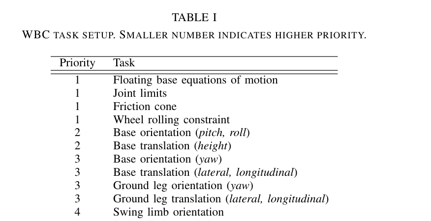
원문 Table I · PDF p.4 — TABLE I WBC TASK SETUP. SMALLER NUMBER INDICATES HIGHER PRIORITY.